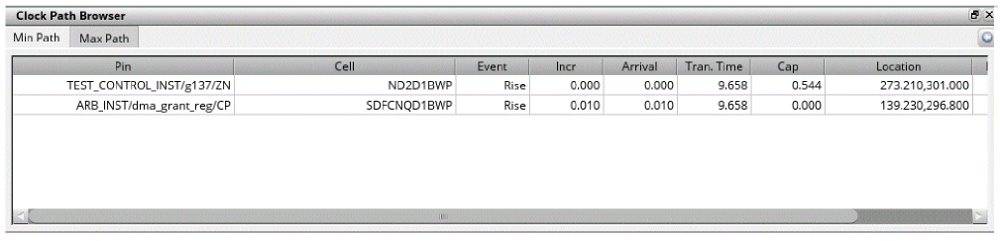

Clock Path Analyzer
Double-click any row in the Clock Path Browser to view the Clock Path Analyzer. The Clock Path Analyzer replaces the Clock Path Browser in its window. You can also select the Show Path Analyzer option in the context menu of the Clock Path Browser to view the Clock Path Analyzer.

Each row in the table of the Clock Path Analyzer represents a stage in the path in question. The following columns are shown:
- Pin – displays the name of the instance pin to which this row applies
- Cell – displays the library cell for the instance
- Event – states whether the row relates to a rise or fall event
- Incr – displays the delay between this row and the previous one
- Arrival – displays the total arrival time of the clock signal at this pin
- Tran. time – displays the transition time at this pin
- Cap – displays the capacitance at the pin (only for output pins)
- Location – displays the location of the pin
- Distance – displays the Manhattan distance from the last pin to this one
- Fanout – displays the fanout driven by this pin (only for output pins)
Return to top